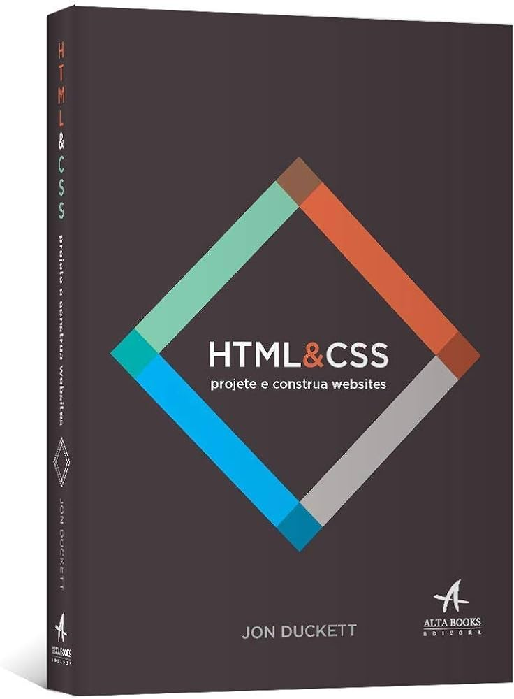

Título: HTML e CSS Projete e Construa Websites
Autor:
John Duckett
Ano:
2016
Sinopse:
Bem-vindo
a uma melhor maneira de
aprender HTML & CSS.
Se você quer projetar, construir
do zero ou ter mais controle sobre
um site existente, este livro
lhe ajudará a criar conteúdos
atrativos e amigáveis.
Sabemos que código pode ser um pouco intimidador,
mas dê uma olhada e veja como este guia difere dos
livros de programação mais tradicionais.
Toda as páginas apresentam um novo tópico
e maneira simples e visual, com explicações
diretas acompanhadas das amostras de código.
Você encontrará ajuda em como organizar e projetar
as páginas do seu site para que possa criar websites
fantásticos e fáceis de usar. Não é necessário ter
experiência!
ESTE LIVRO É PARA:Web designers e programadores;
Editores online e de conteúdo;
Times de blogueiros de e-commerce e marketing;
Tambem para hobby.
VOCÊ APRENDERÁ A:Escrever em HTML5 e CSS3;
Estruturar websites;
Preparar imagens, áudio, e video;
Controlar tipografia e layout.